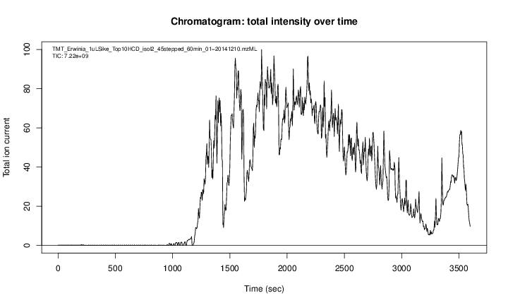

1 Introduction
1.1 How does mass spectrometry work?
Mass spectrometry (MS) is a technology that separates charged molecules (ions) based on their mass to charge ratio (M/Z). It is often coupled to chromatography (liquid LC, but can also be gas-based GC). The time an analyte takes to elute from the chromatography column is the retention time.
An mass spectrometer is composed of three components:
- The source, that ionises the molecules: examples are Matrix-assisted laser desorption/ionisation (MALDI) or electrospray ionisation. (ESI)
- The analyser, that separates the ions: Time of flight (TOF) or Orbitrap.
- The detector that quantifies the ions.
When using mass spectrometry for proteomics, the proteins are first digested with a protease such as trypsin. In mass shotgun proteomics, the analytes assayed in the mass spectrometer are peptides.
Often, ions are subjected to more than a single MS round. After a first round of separation, the peaks in the spectra, called MS1 spectra, represent peptides. At this stage, the only information we possess about these peptides are their retention time and their mass-to-charge (we can also infer their charge by inspecting their isotopic envelope, i.e the peaks of the individual isotopes, see below), which is not enough to infer their identify (i.e. their sequence).
In MSMS (or MS2), the settings of the mass spectrometer are set automatically to select a certain number of MS1 peaks (for example 20)1. Once a narrow M/Z range has been selected (corresponding to one high-intensity peak, a peptide, and some background noise), it is fragmented (using for example collision-induced dissociation (CID), higher energy collisional dissociation (HCD) or electron-transfer dissociation (ETD)). The fragment ions are then themselves separated in the analyser to produce a MS2 spectrum. The unique fragment ion pattern can then be used to infer the peptide sequence using de novo sequencing (when the spectrum is of high enough quality) or using a search engine such as, for example Mascot, MSGF+, …, that will match the observed, experimental spectrum to theoretical spectra (see details below).

The animation below show how 25 ions different ions (i.e. having different M/Z values) are separated throughout the MS analysis and are eventually detected (i.e. quantified). The final frame shows the hypothetical spectrum.

The figures below illustrate the two rounds of MS. The spectrum on the left is an MS1 spectrum acquired after 21 minutes and 3 seconds of elution. 10 peaks, highlited by dotted vertical lines, were selected for MS2 analysis. The peak at M/Z 460.79 (488.8) is highlighted by a red (orange) vertical line on the MS1 spectrum and the fragment spectra are shown on the MS2 spectrum on the top (bottom) right figure.

The figures below represent the 3 dimensions of MS data: a set of spectra (M/Z and intensity) of retention time, as well as the interleaved nature of MS1 and MS2 (and there could be more levels) data.


1.2 Accessing data
1.2.1 From the ProteomeXchange database
MS-based proteomics data is disseminated through the ProteomeXchange infrastructure, which centrally coordinates submission, storage and dissemination through multiple data repositories, such as the PRoteomics IDEntifications (PRIDE) database at the EBI for mass spectrometry-based experiments (including quantitative data, as opposed as the name suggests), PASSEL at the ISB for Selected Reaction Monitoring (SRM, i.e. targeted) data and the MassIVE resource. These data can be downloaded within R using the rpx package.
Using the unique PXD000001 identifier, we can retrieve the relevant metadata that will be stored in a PXDataset object. The names of the files available in this data can be retrieved with the pxfiles accessor function.
px <- PXDataset("PXD000001")
## Querying ProteomeXchange for PXD000001.
px
## Project PXD000001 with 11 files
##
## Resource ID BFC1 in cache in /root/.cache/R/rpx.
## [1] 'F063721.dat' ... [11] 'erwinia_carotovora.fasta'
## Use 'pxfiles(.)' to see all files.
pxfiles(px)
## Project PXD000001 files (11):
## [remote] F063721.dat
## [remote] F063721.dat-mztab.txt
## [remote] PRIDE_Exp_Complete_Ac_22134.xml.gz
## [remote] PRIDE_Exp_mzData_Ac_22134.xml.gz
## [remote] PXD000001_mztab.txt
## [remote] README.txt
## [remote] TMT_Erwinia_1uLSike_Top10HCD_isol2_45stepped_60min_01-20141210.mzML
## [remote] TMT_Erwinia_1uLSike_Top10HCD_isol2_45stepped_60min_01-20141210.mzXML
## [remote] TMT_Erwinia_1uLSike_Top10HCD_isol2_45stepped_60min_01.mzXML
## [remote] TMT_Erwinia_1uLSike_Top10HCD_isol2_45stepped_60min_01.raw
## ...Other metadata for the px data set:
pxtax(px)
## [1] "Erwinia carotovora"
pxurl(px)
## [1] "ftp://ftp.pride.ebi.ac.uk/pride/data/archive/2012/03/PXD000001/generated"
pxref(px)
## [1] "Gatto L, Christoforou A; Using R and Bioconductor for proteomics data analysis., Biochim Biophys Acta, 2013 May 18, doi:10.1016/j.bbapap.2013.04.032 PMID:23692960"Data files can then be downloaded with the pxget function. Below, we retrieve the raw data file. The file is downloaded2 in the working directory and the name of the file is return by the function and stored in the mzf variable for later use 3.
fn <- "TMT_Erwinia_1uLSike_Top10HCD_isol2_45stepped_60min_01-20141210.mzML"
mzf <- pxget(px, fn)
## Downloading TMT_Erwinia_1uLSike_Top10HCD_isol2_45stepped_60min_01-20141210.mzML file.
mzf
## [1] "/root/.cache/R/rpx/d11cf00c66_TMT_Erwinia_1uLSike_Top10HCD_isol2_45stepped_60min_01-20141210.mzML"1.2.2 Data packages
Some data are also distributed through dedicated packages. The msdata, for example, provides some general raw data files relevant for both proteomics and metabolomics.
library(msdata)
## proteomics raw data
proteomics()
## [1] "MRM-standmix-5.mzML.gz"
## [2] "MS3TMT10_01022016_32917-33481.mzML.gz"
## [3] "MS3TMT11.mzML"
## [4] "TMT_Erwinia_1uLSike_Top10HCD_isol2_45stepped_60min_01-20141210.mzML.gz"
## [5] "TMT_Erwinia_1uLSike_Top10HCD_isol2_45stepped_60min_01.mzML.gz"
## proteomics identification data
ident()
## [1] "TMT_Erwinia_1uLSike_Top10HCD_isol2_45stepped_60min_01-20141210.mzid"
## quantitative data
quant()
## [1] "cptac_a_b_peptides.txt"More often, such experiment packages distribute processed data; an example of such is the pRolocdata package, that offers quantitative proteomics data.
Here, we will focus on data dependent acquisition (DDA), where MS1 peaks are selected. In data independent acquisition (DIA), all peaks in the MS1 spectrum are fragmented.↩︎
If the file is already available, it is not downloaded a second time.↩︎
This and other files are also availabel in the
msdatapackage, described below↩︎